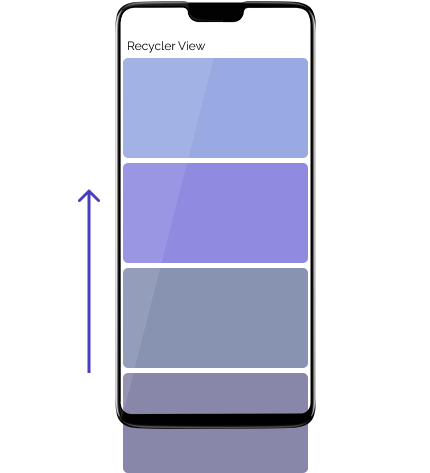
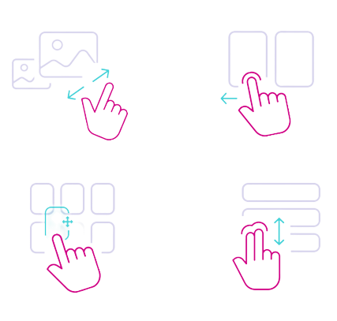

Spring 2022
Android application,
Fridge App
For a course project, my teammate and I developed an Android application using Android Studio. It acts as a virtual fridge that tracks what you currently have in your fridge. We used SQLite to store user data and ingredients.
View on Github


Final iteration of FridgeApp
Process and iteration
The fridge app is a project I worked on with Gabriela Farhat for my Mobile Computing course (IAT 359). The application acts as a virtual fridge allowing user to add, edit, and remove different ingredients in their fridge. As well, users can search for different recipes based on the ingredients in their list. This course mainly focused on the backend functionality rather than front end design.
My partner and I collaborated mainly through GitHub and Discord. Android Studio provides emulators in the software, but I found it much easier to test on an actual Android device.
I worked on the register and login structure for this project using shared preferences, RecyclerView in the fridge activity, the SQLite database structure to store ingredients, the implementation of the Google Maps using their API, and uploading an image from the local device.


Protopye of FridgeApp layout
Challenges
I was responsible for user registration and login using SQLite. I initially assumed we needed to store multiple user accounts which was a big challenge for me. However, I was only required to use SharedPreferences to store user credentials and preferences, which made this task a lot simpler.
Shared Preferences transfers information between activities. This data is available to all activities in the program and acts similar to global variables.

Another challenge is the Recycler View for the fridge activity. Adding items to the RecyclerView gave me errors as I transferred user input from another activity. I solved this by extensive research to further my understanding of the RecyclerView. Turns out each element in a RecyclerView should have its own layout.

Mobile gestures
What I learned
With basic functionality of a virtual fridge, I would like to allow multiple users on the system. Right now, registering a new user will overwrite the previous one. Another limitation is that the Fridge App being limited to Android devices means it cannot be run on approximately one half of users’ devices.
I gained an understanding of how mobile applications are created working on this project. The nature of interactions is different in mobile as users touch and drag the screen as opposed to performing mouse clicks and key presses.